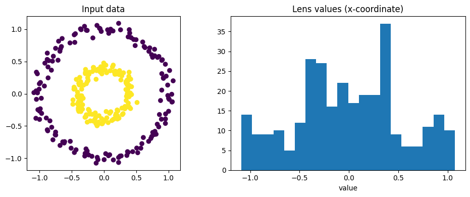
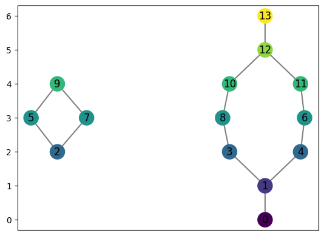

8. Tutorial: Computing a Mapper Graph
The Mapper algorithm is a topological data analysis method that summarizes the shape of a point cloud as a graph. Given a dataset and a lens function that maps points to real values, Mapper:
Covers the range of the lens function with overlapping intervals.
Pulls back each interval to a subset of the point cloud.
Clusters each subset independently.
Builds a graph whose nodes are clusters and whose edges connect clusters that share points.
This notebook walks through the computeMapper function: its inputs, options, and — at the end — how to use a custom distance matrix instead of raw Euclidean coordinates.
[1]:
# Standard imports
import matplotlib.pyplot as plt
8.1. Generate example data
In this case, we will use an example data set from the sklearn package.
[2]:
from sklearn.datasets import make_circles
number_of_points = 500
data, labels = make_circles(n_samples=number_of_points, factor=0.4, noise=0.05, random_state=0)
plt.scatter(data[:, 0], data[:, 1], c=labels)
plt.axis('scaled');

8.2. Computing an example mapper graph
We may compute the mapper graph of this shape using computeMapper. In this example, we use a cover from \(-1\) to \(1\) with 7 intervals overlapping 50%. The lens function used is just the first coordinate of each data point.
[3]:
from cereeberus import MapperGraph, computeMapper, cover
import numpy as np
import sklearn
graph = MapperGraph()
graph = computeMapper(pointcloud = data,
lensfunction=(lambda a : a[0]),
cover=cover(min=-1, max=1, numcovers=7, percentoverlap=.5),
clusteralgorithm=sklearn.cluster.DBSCAN(min_samples=2,eps=0.3).fit
)
graph.draw()

8.3. Understanding the inputs
computeMapper takes four required arguments:
Argument |
Type |
Description |
|---|---|---|
|
list of tuples or numpy array |
The input data. Can be |
|
callable or list |
The filter function. Either |
|
list of intervals |
Overlapping intervals covering the range of the lens function. Use the |
|
|
How to cluster the points in each cover set. Any sklearn-style |
An optional fifth argument distance_matrix is covered at the end of this notebook.
8.3.1. The cover helper
The cover(min, max, numcovers, percentoverlap) function builds a list of overlapping intervals spanning [min, max]. The percentoverlap controls how much neighboring intervals overlap — a value of 0.5 means each interval extends 50% beyond its base width on each side. Covers with no points in them are automatically discarded by computeMapper.
[4]:
print(cover(min=-1, max=1, numcovers=4, percentoverlap=.5))
[(-1.125, -0.375), (-0.625, 0.125), (-0.125, 0.625), (0.375, 1.125)]
Note that cover intervals near the boundary can extend slightly beyond min and max when percentoverlap > 0. This is expected and ensures no boundary points are missed.
8.3.2. Manual input
Both cover and pointcloud can also be provided directly as plain lists. This is useful for small examples or debugging.
[5]:
graph2 = computeMapper([(0.6, 0), (-0.1, 0.5)], (lambda a : a[0]), [(-1,0),(-0.5,0.5),(0,1)], "trivial")
graph2.draw()

8.4. Comparing clustering algorithms
The choice of clustering algorithm significantly affects the shape of the mapper graph. Below we apply computeMapper to a two-moons dataset using four different strategies: DBSCAN, KMeans, HDBSCAN, and trivial (one cluster per cover set). The lens function is the \(y\)-coordinate.
[6]:
from sklearn.datasets import make_moons
number_of_points = 200
data, labels = make_moons(n_samples=number_of_points, noise=0.05, random_state=0)
val = 0
pointcloud = []
while val < number_of_points:
pointcloud.append(data[val])
val += 1
[7]:
import matplotlib.pyplot as plt
plt.scatter(data[:, 0], data[:, 1], c=labels)
plt.axis('scaled')
[7]:
(np.float64(-1.2259004307319845),
np.float64(2.1731624220868624),
np.float64(-0.6639113257043391),
np.float64(1.162391196195627))

[8]:
graph = MapperGraph()
graph = computeMapper(pointcloud, (lambda a : a[1]), cover(min=-1, max=1, numcovers=7, percentoverlap=.4), sklearn.cluster.DBSCAN(min_samples=2,eps=0.3).fit)
graph.draw()

[9]:
graph = MapperGraph()
graph = computeMapper(pointcloud, (lambda a : a[1]), cover(min=-1, max=1, numcovers=7, percentoverlap=.4), sklearn.cluster.KMeans(n_clusters=4).fit)
graph.draw()

[10]:
graph = MapperGraph()
graph = computeMapper(pointcloud, (lambda a : a[1]), cover(min=-1, max=1, numcovers=7, percentoverlap=.4), sklearn.cluster.HDBSCAN(min_cluster_size=8, copy=False).fit)
graph.draw()

[11]:
graph = MapperGraph()
graph = computeMapper(pointcloud, (lambda a : a[1]), cover(min=-1, max=1, numcovers=7, percentoverlap=.4), "trivial")
graph.draw()

8.4.1. Cover indexing
computeMapper assigns each node a cover index based on its position in the cover list. This index is preserved in the graph so that distances between mapper graphs can be computed consistently. The node labels you see correspond to which interval in the cover each cluster came from — even if many intervals are empty, the numbering reflects the full cover.
For example, using a very large cover range (−10 to 10, 40 intervals) on data that only spans roughly −1 to 1 means most intervals are empty. The node labels skip ahead to reflect where the data actually falls in the cover.
[12]:
graph = MapperGraph()
graph = computeMapper(pointcloud, (lambda a : a[1]), cover(min=-10, max=10, numcovers=40, percentoverlap=.4), "trivial")
graph.draw()

8.5. Different lens functions: Swiss Roll
The lens function can be any callable that maps a point to a real value. Here we use a 2D projection of the Swiss Roll dataset and try several different lens functions — the \(y\)-coordinate, a product, a square root shift, and the radial distance from the origin — to show how the choice of lens changes the mapper graph topology.
[13]:
from sklearn.datasets import make_swiss_roll
number_of_points = 300
data, labels = make_swiss_roll(n_samples=number_of_points, noise=0.1, random_state=0)
val = 0
pointcloud = []
while val < number_of_points:
pointcloud.append((data[val][0],data[val][2]))
val += 1
[14]:
import matplotlib.pyplot as plt
plt.scatter(data[:, 0], data[:, 2], c=labels)
plt.axis('scaled');

[15]:
graph = MapperGraph()
graph = computeMapper(pointcloud, (lambda a : a[1]), cover(min=-12, max=15, numcovers=10, percentoverlap=.4), sklearn.cluster.DBSCAN(min_samples=2,eps=3).fit)
graph.draw()

[16]:
graph = MapperGraph()
graph = computeMapper(pointcloud, (lambda a : a[1] * a[0]), cover(min=-200, max=200, numcovers=7, percentoverlap=.4), sklearn.cluster.DBSCAN(min_samples=2,eps=3).fit)
graph.draw()

[17]:
graph = MapperGraph()
graph = computeMapper(pointcloud, (lambda a : np.sqrt(a[0]+15)), cover(min=0, max=6, numcovers=7, percentoverlap=.4), sklearn.cluster.DBSCAN(min_samples=2,eps=3).fit)
graph.draw()

[18]:
graph = MapperGraph()
graph = computeMapper(pointcloud, (lambda a : np.sqrt(a[0]**2 + a[1]**2)), cover(min=0, max=15, numcovers=10, percentoverlap=.4), sklearn.cluster.DBSCAN(min_samples=2,eps=3).fit)
graph.draw()

8.6. Using a precomputed distance matrix
By default, computeMapper uses the raw Euclidean coordinates of pointcloud when clustering. However, you can supply a custom precomputed distance matrix via the distance_matrix argument. This is useful when:
Your data lives on a manifold and Euclidean distance is not meaningful.
You have a custom similarity metric (e.g. edit distance, geodesic distance, correlation).
You only have pairwise distances, not coordinates at all.
When distance_matrix is provided:
pointcloudcan beNone— no coordinates are needed.lensfunctionmust be a precomputed list of values (one per point), since there are no coordinates to evaluate a callable on.The clustering algorithm must be configured with
metric='precomputed'(e.g.DBSCAN(metric='precomputed', eps=0.3).fit).
The example below recreates the opening circles example, but passes an explicit pairwise distance matrix and a precomputed lens list instead of coordinates.
[19]:
from sklearn.datasets import make_circles
from sklearn.metrics import pairwise_distances
# Generate the circles dataset
n = 300
data_dm, labels_dm = make_circles(n_samples=n, factor=0.4, noise=0.05, random_state=0)
# Compute the full pairwise Euclidean distance matrix
dm = pairwise_distances(data_dm) # shape (n, n)
# Precompute lens values as a list — first coordinate of each point
lens_values = [float(p[0]) for p in data_dm]
fig, axes = plt.subplots(1, 2, figsize=(10, 4))
axes[0].scatter(data_dm[:, 0], data_dm[:, 1], c=labels_dm)
axes[0].set_title('Input data')
axes[0].axis('scaled')
axes[1].hist(lens_values, bins=20)
axes[1].set_title('Lens values (x-coordinate)')
axes[1].set_xlabel('value')
plt.tight_layout()

[20]:
# Run computeMapper with no pointcloud — distance matrix only
graph_dm = computeMapper(
pointcloud=None,
lensfunction=lens_values,
cover=cover(min=-1.5, max=1.5, numcovers=7, percentoverlap=0.5),
clusteralgorithm=sklearn.cluster.DBSCAN(metric='precomputed', eps=0.3, min_samples=2).fit,
distance_matrix=dm,
)
graph_dm.draw()

You can also pass both pointcloud and distance_matrix together — for example, when you want a callable lens function (which needs coordinates) but a non-Euclidean clustering metric.
[21]:
# Same result, but lens function is callable because we also pass pointcloud
graph_dm2 = computeMapper(
pointcloud=data_dm,
lensfunction=lambda p: p[0],
cover=cover(min=-1.5, max=1.5, numcovers=7, percentoverlap=0.5),
clusteralgorithm=sklearn.cluster.DBSCAN(metric='precomputed', eps=0.3, min_samples=2).fit,
distance_matrix=dm,
)
graph_dm2.draw()